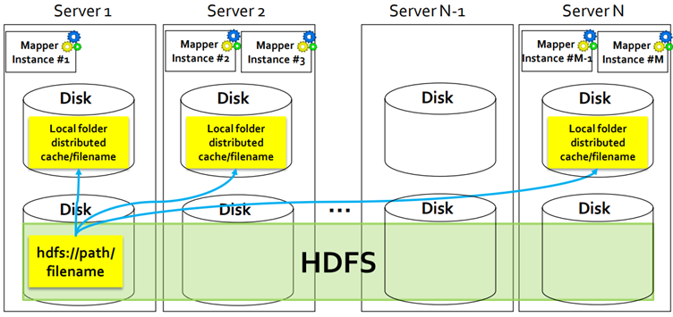

8 MapReduce and Hadoop Advanced Topics
Multiple inputs
In some applications data are read from two or more datasets, also having different formats.
Hadoop allows reading data from multiple inputs (multiple datasets) with different formats by specifying one mapper for each input dataset. However, the key-value pairs emitted by the mappers must be consistent in terms of data types.
The input data is collected from different sensors: all sensors measure the same “measure”, but sensors developed by different vendors use a different data format to store the gathered data/measurements.
In the driver use the addInputPath method of the MultipleInputs class multiple times to
- Add one input path at a time
- Specify the input format class for each input path
- Specify the Mapper class associated with each input path
Example: multiple inputs
MultipleInputs.addInputPath(
job,
new Path(args[1]),
TextInputFormat.class,
Mapper1.class
);
MultipleInputs.addInputPath(
job,
new Path(args[2]),
TextInputFormat.class,
Mapper2.class
);- 1
-
Specify two input paths (
args[1]andargs[2]) - 2
-
The data of both paths are read by using the
TextInputFormatclass - 3
-
Mapper1is the class used to manage the input key-value pairs associated with the first path - 4
-
Mapper2is the class used to manage the input key-value pairs associated with the second path
Multiple outputs
In some applications it could be useful to store the output key-value pairs of a MapReduce application in different files. Each file contains a specific subset of the emitted key-value pairs, based on some rules (usually this approach is useful for splitting and filtering operations), and each file name has a prefix that is used to specify the “content” of the file.
All the files are stored in one single output directory: there aren’t multiple output directories, but only multiple output files with different prefixes.
Hadoop allows specifying the prefix of the output files: the standard prefix is “part-” (see the content of the output directory of some of the previous applications).
The MultipleOutputs class is used to specify the prefixes of the output files
- One different prefix for each “type” of output file
- There will be one output file of each type for each reducer (for each mapperfor map-only jobs)
Driver
Use the method MultipleOutputs.addNamedOutput multiple times in the Driver to specify the prefixes of the output files. This method has 4 parameter
- The job object
- The “name/prefix” of MultipleOutputs
- The OutputFormat class
- The key output data type class
- The value output data type class
Call this method one time for each “output file type”
Example: multiple outputs
MultipleOutputs.addNamedOutput(
job,
"hightemp",
TextOutputFormat.class,
Text.class,
NullWritable.class
);
MultipleOutputs.addNamedOutput(
job,
"normaltemp",
TextOutputFormat.class,
Text.class,
NullWritable.class
);This example defines two types of output files
- The first type of output files while have the prefix
"hightemp" - The second type of output files while have the prefix
"normaltemp"
Map-only
Define a private MultipleOutputs variable in the mapper if the job is a map-only job (in the reducer otherwise)
Create an instance of the MultipleOutputs class in the setup method of the mapper (or in the reducer)
Use the write method of the MultipleOutputs object in the map method (or in the reduce method) to write the key-value pairs in the file of interest
Example: map-only
This example writes the current key-value pair in a file with the prefix "hightemp-"
This example writes the current key-value pair in a file with the prefix "normaltemp-"
Close the MultipleOutputs object in the cleanup method of the mapper (or of the reducer)
Distributed cache
Some applications need to share and cache (small) read-only files to perform efficiently their task. These files should be accessible by all nodes of the cluster in an efficient way, hence a copy of the shared/cached (HDFS) files should be available locally in all nodes used to run the application.
DistributedCache is a facility provided by the Hadoop-based MapReduce framework to cache files (e.g., text, archives, jars needed by applications).

In image Figure 8.1, in HDFS disks there are the HDFS file(s) to be shared by means of the distributed cache, while on the disks there are local copies of the file(s) shared by means of the distributed cache. A local copy of the file(s) shared by means of the distributed cache is created only in the servers running the application that uses the shared file(s).
In the Driver of the application, the set of shared/cached files are specifiedby using the job.addCacheFile(path) method. During the initialization of the job, Hadoop creates a “local copy” of the shared/cached files in all nodes that are used to execute some tasks (mappers or reducers) of the job (i.e., of the running application). The shared/cache file is read by the mapper (or the reducer), usually in its setup method, since the shared/cached file is available locally in the used nodes/servers, its content can be read efficiently.
The efficiency of the distributed cache depends on the number of multiple mappers (or reducers) running on the same node/server: for each node a local copy of the file is copied during the initialization of the job, and the local copy of the file is used by all mappers (reducers) running on the same node/server.
Without the distributed cache, each mapper (reducer) should read, in the setup method, the shared HDFS file, hence, more time is needed because reading data from HDFS is more inefficient than reading data from the local file system of the node running the mappers (reducers).
Example: distributed cache
Driver
Mapper/Reducer
protected void setup(Context context) throws IOException, InterruptedException{
String line;
// Retrieve the (original) paths of the distributed files
URI[] urisCachedFiles = context.getCacheFiles();
// Read the content of the cached file and process it.
// In this example the content of the first shared file is opened.
BufferedReaderfile = new BufferedReader(
new FileReader(
new File(
new Path(urisCachedFiles[0].getPath()).getName()
)
)
);
// Iterate over the lines of the file
while ((line = file.readLine()) != null) {
// process the current line
//...
}
file.close();
}Notice that .getName() retrieves the name of the file. The shared file is stored in the root of a local temporary folder (one for each server that is used to run the application) associated with the distributed cache. The path of the original folder is different from the one used to store the local copy of the shared file.